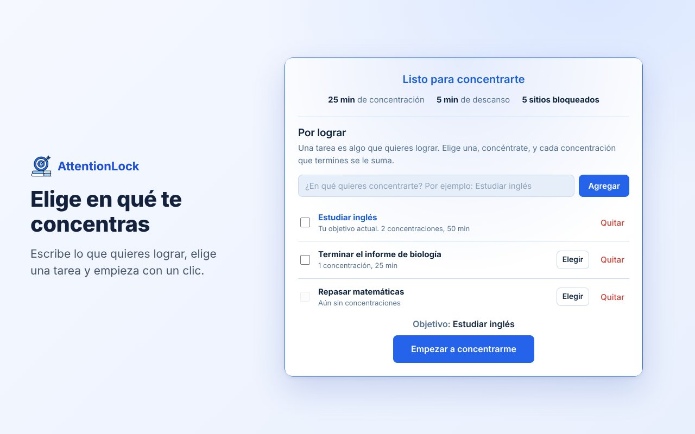
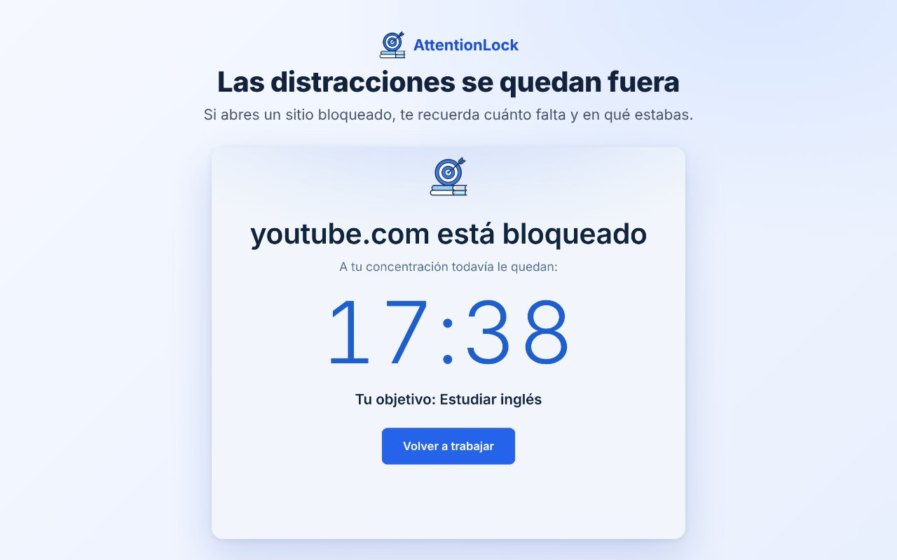

AttentionLock
AttentionLock
Concéntrate en lo que importa. Bloquea lo que te distrae.
Tareas, temporizador de concentración y bloqueo de sitios en una extensión gratuita para Chrome. Todo se guarda solo en tu navegador.
Añadir a Chrome
Qué puedes hacer
✅ Tareas
Escribe lo que quieres lograr, elige una y concéntrate solo en ella.
⏱️ Temporizador
Ciclos de concentración y descanso, con el tiempo visible en el ícono.
🚫 Bloqueo de sitios
Los sitios que te distraen quedan bloqueados mientras te concentras.
🗓️ Horarios
Grupos de sitios bloqueados en los días y horas que elijas.
🔒 Bloqueo firme
Hasta 7 días sin poder quitar tus bloqueos, ni siquiera tú.
📊 Estadísticas
Tiempo enfocado, tareas logradas y una meta semanal con niveles.

Tu privacidad
AttentionLock no tiene cuentas ni servidores, no muestra anuncios y no envía tus datos a ningún lugar. Lee la política de privacidad.
Ayuda
¿Encontraste un error o tienes una idea? Escríbenos aquí o desde la pestaña "Asistencia" de Chrome Web Store.